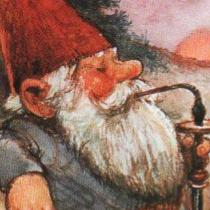

WILL MALTBY
BEST FAN
OFFICIAL WEBPAGE
The team of people who made this album is very small, but here's the flying circus if you want to see them:
 DoogLord - The creator of the first song on the album, and the creator of the album cover. He made his songs on his phone, and until recently he was the only one with a copy of Garageband. He's definitely the one who makes the album what it is.
DoogLord - The creator of the first song on the album, and the creator of the album cover. He made his songs on his phone, and until recently he was the only one with a copy of Garageband. He's definitely the one who makes the album what it is.

Pokerman - He's created 3 or 4 tracks, and is also an integral part of the album. Him and I used to use FL Studio for our tracks, which was very hard. Recently, I tried getting him a copy of Garageband on my Mac VM, but he instead chose to use a mobile DAW.
 Plopilpy - That's me! For a long time, I'd been wanting to get Garageband, and DoogLord's VM didn't work. Just recently, I got a copy of Mountain Lion on a VM and I made the switch from FL Studio to Garageband. I've been really pumping out tracks these days because of that. If you wanna get in touch with me, my email is plopilpy@adriankornatowski.tk. The other members of the crew want to get emails, but Patryk ate their phones so they can't get to their email inbox.
Plopilpy - That's me! For a long time, I'd been wanting to get Garageband, and DoogLord's VM didn't work. Just recently, I got a copy of Mountain Lion on a VM and I made the switch from FL Studio to Garageband. I've been really pumping out tracks these days because of that. If you wanna get in touch with me, my email is plopilpy@adriankornatowski.tk. The other members of the crew want to get emails, but Patryk ate their phones so they can't get to their email inbox.
Each song on this album was produced (in most cases) under a day. This album is completely free. We didn't earn a single dollar for
making it nor will we earn money for you listening to it. Seriously, even this domain is free and uses Github Pages to store our lovely files.